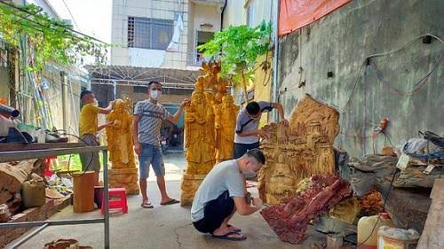

01 · Hố Nai, Biên HòaNghề làm đồ mộc
Phổ biến ở Đồng Nai từ thời xưa do nhu cầu về xây dựng nhà cửa và đóng thuyền. Đầu thế kỷ XX, một số nghệ nhân đã mở một xưởng làm mộc ở Biên Hòa, chuyên sản xuất đồ mộc thủ công mỹ nghệ phục vụ cho kiến trúc nhà cửa và trang trí nội thất. Những ngôi nhà cổ có kiến trúc bằng gỗ có kết cấu xây dựng rất mỹ thuật. Có hai dạng kiến trúc đồ gỗ ứng dụng mỹ thuật, đó là: Đồ mộc trên kiến trúc đình, chùa, miếu và đồ mộc trên kiến trúc nhà ở dân gian.
Sau năm 1975, một số làng mộc được hình thành trong tỉnh, tiêu biểu là làng mộc ở Hố Nai do những thợ gốc miền Bắc di cư năm 1954 thực hiện. Ngày nay, ở khu vực phường Tân Biên và Tân Hòa thành phố Biên Hòa (khu vực Hố Nai) là nơi tập trung nhiều cơ sở làm mộc thủ công, đồ mộc sản xuất theo kiểu hộ gia đình, cơ sở và doanh nghiệp. Những sản phẩm đồ mộc của các cơ sở tư nhân và của các doanh nghiệp ở Đồng Nai ngày càng đáp ứng được thị trường tiêu thụ đồ mộc ở trong và ngoài địa phương đến với từng gia đình và xã hội trong cuộc sống hiện đại và hội nhập.